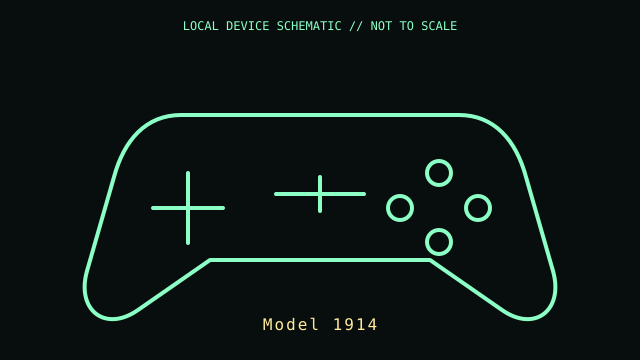

[ GAME CONTROLLERS // IDENTIFIED COMPONENT ]
Xbox Wireless Controller (Model 1914)
Xbox Series-generation wireless gamepad with a dedicated Share button and hybrid D-pad.

MODEL IDENTIFICATION: Manufacturer identity: Model 1914. Compare the unit label, regional suffix, and revision against the manufacturer's manual before repair or compatibility claims.
Model specifications
| Catalog subcategory | Game controllers |
|---|---|
| Exact model / ID | Model 1914 |
| Model-specific features | Xbox Wireless radio for Xbox consoles; Bluetooth for compatible PCs/mobile hosts; USB-C connector for wired play and charging where supported; two AA cells or optional rechargeable pack. |
| Interface and host support | Bluetooth host compatibility differs from Xbox Wireless Adapter support. USB-C data and vibration behavior depend on cable, OS, game API, and controller firmware. |
| Revision / driver caveat | Read the model number from the battery compartment or rear label: Model 1914 is not the older Xbox One controller. Color editions and revisions may change the radio/module while retaining the family name. |
Preservation and service notes
Remove AA cells before storage and check for leakage. Inspect USB-C port, thumbstick drift, bumper pivots, and D-pad wear. Keep firmware and Xbox Accessories version with test notes.
Record the as-found label, accessories, host OS, driver/firmware version, and test method. Separate observed condition from published specifications; do not treat family-level feature claims as proof of a unit's revision.
Primary manufacturer documentation
- Xbox Support — connect an Xbox Wireless Controller to a PCMicrosoft connection guidance for Bluetooth, USB, and the Xbox Wireless Adapter.
- Xbox Wireless Controller product informationManufacturer feature overview; model identification remains on the unit label.
Manufacturer pages may change or retire. Preserve a copy of the applicable manual and note its revision when documenting a physical unit.